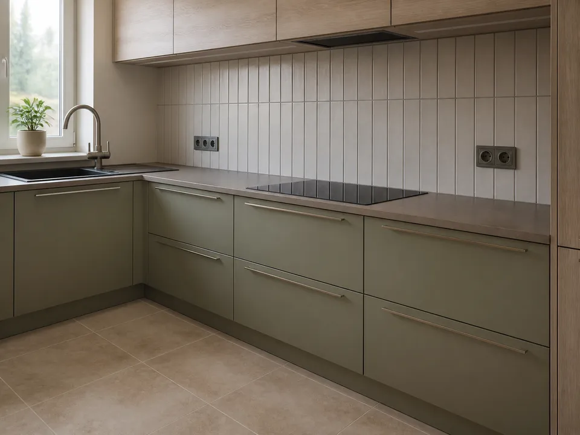

Virtuvės sienelė
Parenkama estetiška pradžios vieta, suderinamas siūlių ritmas ir viršutinis apdailos aukštis.
Klijuojamos virtuvės sienelės, prijuostės ir grindys. Plytelių išdėstymas derinamas su baldais, stalviršiu, rozetėmis ir matomomis briaunomis.

Parenkama estetiška pradžios vieta, suderinamas siūlių ritmas ir viršutinis apdailos aukštis.
Angos išpjaunamos tiksliai, kad mechanizmai bei apdailos rėmeliai tvarkingai priglustų.
Paruošiamas pagrindas ir klijuojamos lengvai prižiūrimos keraminės arba akmens masės plytelės.
Parenkama tinkama glaisto spalva, sandarinamos jungtys prie stalviršio ir kitų medžiagų.
Virtuvės plytelės klijuojamos Pabradėje, Švenčionių rajone ir pagal susitarimą Vilniuje.
Geriausia turėti baldų projektą, stalviršio aukštį ir pasirinktų plytelių formatą. Tai leidžia iš anksto suplanuoti siūles bei pjūvius.
Atsiųskite sienelės matmenis, baldų projektą ir plytelių pavyzdį.